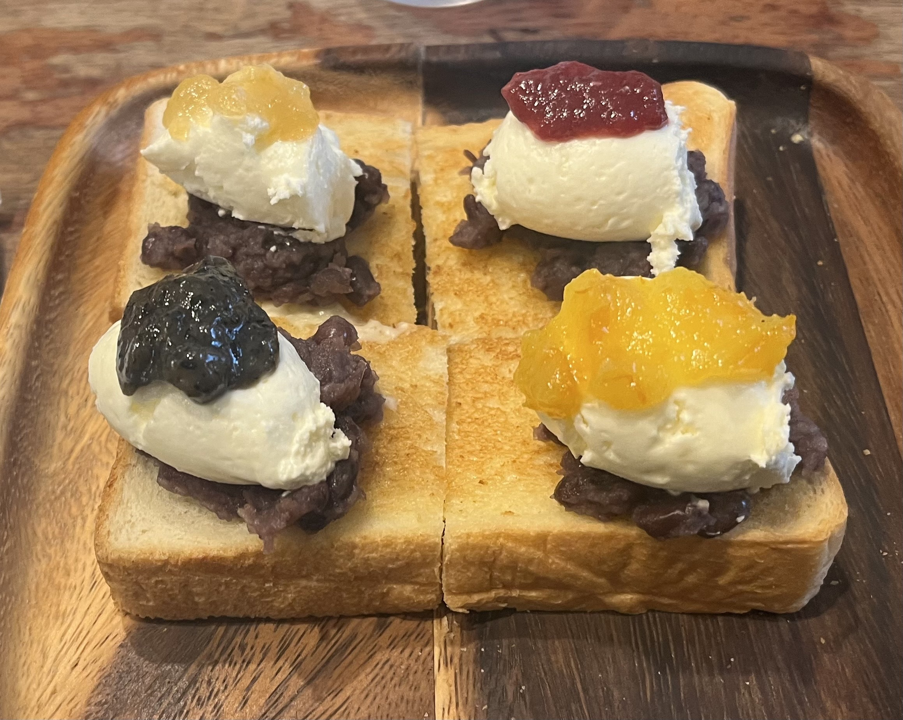
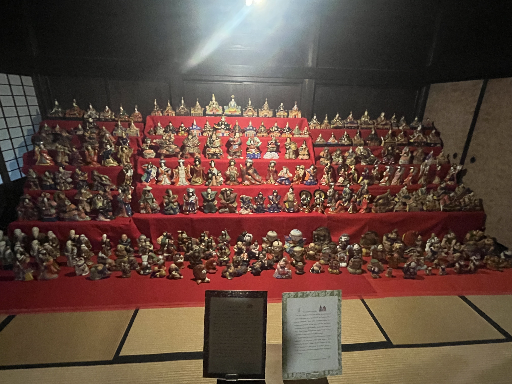
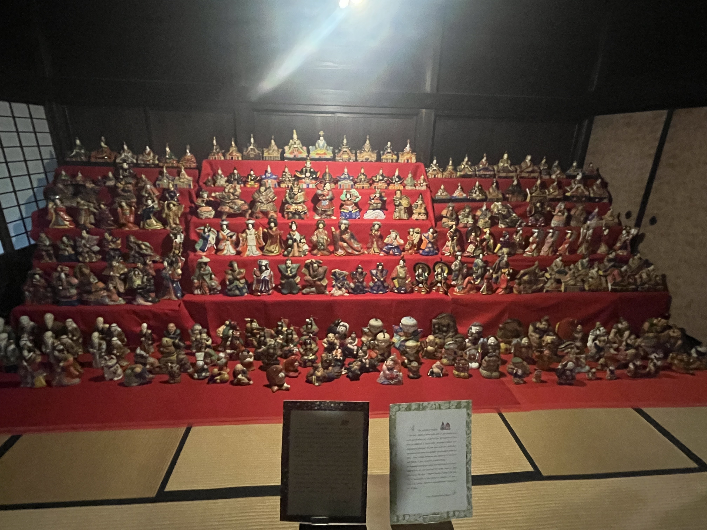

名古屋・下呂・白川郷旅行
Top先日、ずっと行きたかった名古屋・下呂温泉・白川郷へ旅行してきました！ 夜行バスを使った1泊2日（車中泊含めると2泊3日）の旅ですが、内容盛りだくさん。 ぜひ最後までお楽しみください！
訪れた場所
早朝の名古屋に到着！旅は絶品モーニングから
長い夜行バスの旅を終え、早朝に名古屋駅に到着！
眠たい目をこすりながら、まず向かったのは喫茶店です。
名古屋といえば、やっぱり「モーニング」を体験しなきゃ始まらない！
こんがり焼かれた厚切りトーストに、あんことクリームが贅沢にトッピング！その上にはおいしそうな四種類のジャムも乗り、朝から贅沢なひと時を過ごせました！

名古屋名物！名古屋城を散策
腹ごしらえが済んだところで、続いて訪れたのは名古屋城！
歴史を感じさせるたたずまいには思わず圧倒されました！
近くには資料館もあり、名古屋で作られた工芸品が展示されていました！
名古屋のお昼といえばやっぱりこれ！濃厚味噌カツ！
名古屋駅をたっぷり歩いた後は、名古屋駅に戻ってお昼ごはん
ランチはもちろん、名物の「味噌カツ」です！
サクサクの衣に、濃厚で甘じょっぱい味噌ダレがたっぷりかかっていて、これがもう絶品！ご飯がどんどん進む味で、ぺろりと完食してしまいました。
目指すは温泉郷！下呂温泉へ
名古屋グルメを堪能した後は、電車に揺られていよいよ今回の旅のメインの一つ、下呂温泉エリアへ。
都会の景色から、だんだんと緑豊かな山の風景に変わっていく車窓を眺めるのも、旅の醍醐味ですよね。
温泉エリアについたら、今回宿泊予定の「湯本館」さんに移動！
荷物を置いて身軽になったところで、あたりの散策に出かけます！
白川郷
下呂温泉から少し足を延ばして、世界遺産の「白川郷」までやってきました。
雄大な自然と積み重ねられた年月が生み出す、歴史的で神秘的な空間！
歴史展示室ではこの土地の暮らしや文化に触れることができ、静かな枯山水のお庭もあって、本当に風流で落ち着く時間…。どこを切り取っても絵になる景色に、ただただ癒されました。
土産物店などもあり、充実した時間を過ごせました！
 

旅の疲れを癒す、至福の下呂温泉
白川郷の散策を終え、旅館に戻る前に温泉施設へ立ち寄り！
日本三名泉の一つと言われる「下呂温泉」の実力を体感です。とろりとしたお湯が肌に優しくなじんで、歩き疲れた足の疲れがじんわりと溶けていくようでした…。もう「最高…」しか言葉が出ません。
この後入る予定の、旅館の中にある温泉にも期待が高まります！
旅館での贅沢なひととき
温泉で体も温まったところで、旅館に戻り、お待ちかねの夕食タイム！！
地元の食材をふんだんに使った豪華なお食事は、見た目も美しくて、味も格別でした。
その後、旅館の中にある温泉にもゆっくり浸かって、心も体もリフレッシュ。
盛りだくさんだった1日目が、最高な形で締めくくられました。
怒涛のスケジュールで大満喫の1日目！二日目にも期待が膨らみますね！